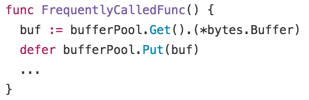
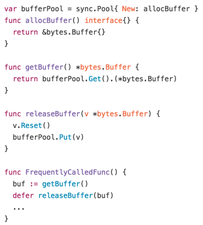
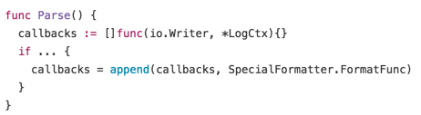
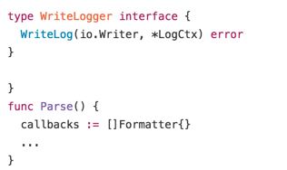

WTF Was Wrong With My Go Code
WTF Was Wrong With My Go Code
After being primarily a Perl/C programmer for over 16 years, I started writing Go code about 3 to 4 years ago.
At the time I was still trying to learn how to write code that feels right in Go, and back then I was thinking that I was doing an alright job. After having written a few hundred thousand lines of Go, I had a chance to look at one of the earliest libraries that I wrote back then: Boy, WTF was I thinking?
I was looking at this code again because I had a need for it today — and boy, was I reluctant to include this in the list of dependencies for my app. So I rewrote it to fit the standards which I follow today when writing Go.
In this article, I’m going to pick up a few items and describe what I think I did wrong, and why I rewrote it the way I did this time, in hopes that somebody will find it useful.
Apache Log Format in Go
The library in question is a utility library that generates access logs. The trick is that it’s a fully configurable logger which accepts Apache-style log formats, so you can just copy over your favorite log format from your Apache web server and use it in your Go http server.
Naming Things
Previously, the constructor for my library was apachelog.NewApacheLog(). That is way too redundant. I have no idea why I made it that way 3 years ago. This was definitely a silly mistake in hindsight. Now it’s just apachelog.New().
Furthermore, the URL of the package has almost nothing to do with the actual package name. I can see why I named the repository “go-apache-logformat” — because it matches the original Perl module that ported from (“Apache::LogFormat::Compiler”), but this was a bad decision. I don’t want to change the repository name at this point, but this is definitely one of the things that I would change if I could.
Pooled Resources
Pieces of data that are very short lived but are allocated very frequently can be managed with sync.Pool. This allows you to re-utilize a previously allocated piece of data, thereby avoiding a costly re-allocation.
When I was initially writing the library, either sync.Pool did not exist, or it just got released. I used to use sync.Pool like this:

But after having written this pattern for a while, I have now settled on a pattern to write a resource pool. Namely, I create three functions: allocXXX(), getXXX(), and releaseXXX(), and only access the pool via the getXXX() and releaseXXX() functions:

There are three reasons for this.
First, you no longer have to type-assert by hand every time you fetch the data.
Second, the way you release the data protects you from passing a wrong value to Put() (which takes interface{}, so nothing prevents you from shoving in a completely unrelated piece of data into the pool). (UPDATE: This should probably be Reset()+Grow(0), not Reset())
And finally, you get the benefit of automatically reseting the piece of data when you release it. In the above example, we always call Reset() so that you don’t accidentally store large chunk of data along with your main data.
I feel that this is by far the cleanest and safest way to use sync.Pool.
Using Interfaces
The way we map a highly customizable log format to actual code is by parsing the format and generating a list of things that can generate the corresponding string that goes along with the specified format.
Back then this was stored as callback functions. This is fine and dandy, but I was having to generate code like this where SpecialFormatter was an instance of an object, and FormatFunc was a method associated with it. This just didn’t quite feel Go-ish:

The obvious answer is, then is to implement it in terms of an interface. This allows you to specify anything that implements the interface to be pushed into the callbacks list, and now this definitely feels more Go-ish.

And the API…
Yeah, so for whatever reason I had back then, I made a really messy API.
I had a CombinedLog global which also stored as its instance value the destination io.Writer to write the logs, which made for an interesting case when you wanted to use CombinedLog in couple of different locations in the same program. This has now been fixed by completely ripping out the log destination from our library, and instead implementing a WriteLog(io.Writer, LogCtx) method where you can specify the io.Writer to write to. It’s much more Go-ish.
In order to glue this on to the net/http framework, I created a function called WrapLoggingHandler Back then. WTF is WrapLoggingHandler? This has also been changed. Now it’s just ApacheLog.Wrap(http.Handler), which returns another http.Handler.
Conclusion
Well, TBH the conclusion is that, my Go-fu sucked a few years back. I’m still on my way, but I’m definitely getting better. Hope this saves new Gophers a few hours of unproductive hacking time in the future.